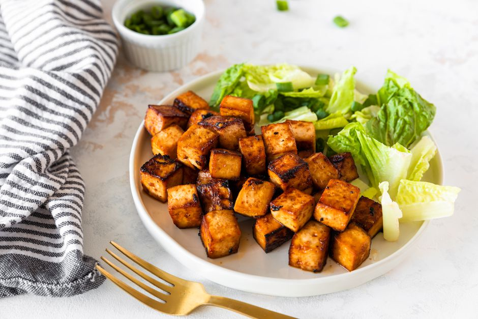

Crispy Glazed Tofu

Description
Korean barbecue without the meat? This Korean BBQ tofu recipe boasts some big flavors with protein-packed tofu.
Korean barbecue sauce makes an excellent marinade for baked Korean BBQ tofu—just thin it out a bit with water. Don't have any Korean barbecue sauce on hand, but craving that unique spicy, salty and sweet combination that only Korean food can provide? Try this Korean barbecue sauce-inspired marinade for baked tofu. It is vegetarian and vegan, and, if you use a gluten-free soy sauce, it is free of gluten and wheat, too.
Amounts provided are approximate, so feel free to adjust to your liking. Scroll down for more easy ways to make baked tofu. New to cooking with tofu? Try this Korean BBQ Tofu recipe first—it's so scrumptious you may want to try tofu in more recipes.
Ingredients
- 3 Tablespoons Soy Sauce
- 1 Tablespoon Rice Vinegar
- 3 Cloves Garlic, Minced
- 2 Tablespoons Ketchup, Hoisin, or Barbecue Sauce
- 1 Tablespoon Maple Syrup
- 1 Teaspoon Sugar
- 1 Tablespoon Sesame Oil
- 2 Teaspoons Hot Sauce, or Sriracha Sauce
- 1 Block Extra-Firm Tofu, Pressed and Cut Into Cubes, Triangles, or Slabs
Steps
- Gather the ingredients.
- First, prepare the tofu. Like most vegan tofu recipes, this one will taste best if you press the tofu first. Pressing allows the tofu to absorb more of the flavorings and seasonings which you add to it. Not sure how to do that? See this easy step-by-step guide on how to press tofu. Cut into cubes or triangles.
- Whisk together all the ingredients except for the tofu to form a marinade.
- Place the tofu in a wide shallow container and cover with marinade, making sure each piece of tofu is coated well. Allow tofu to marinade for at least 20 minutes.
- Lightly grease a baking sheet with nonstick spray or use a bit of oil, any kind, if you don't have nonstick spray. Preheat oven to 400 F.
- Bake for 20 to 25 minutes.
- Then use a spatula to turn the tofu pieces over and bake for another 8 to 10 minutes. Tofu pieces should be lightly crisped and not soft and squishy, but not charred.